Screenshots
Aktuelle Version
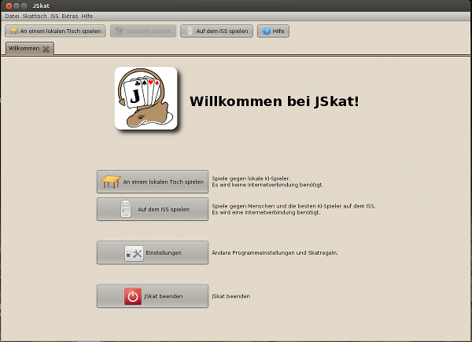Der neue Startbildschirm zeigt die zwei Spieloptionen für JSkat: Sie können offline gegen die mitgelieferten KI-Spieler oder online gegen Menschen oder die derzeit stärksten KI-Spieler auf dem Internationalen Skat-Server spielen.
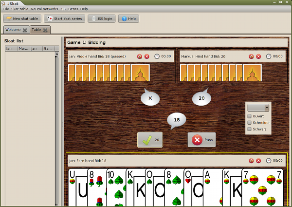Reizen
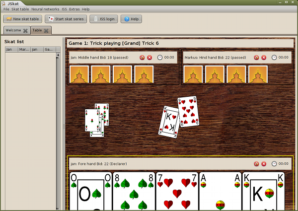Ausspielen
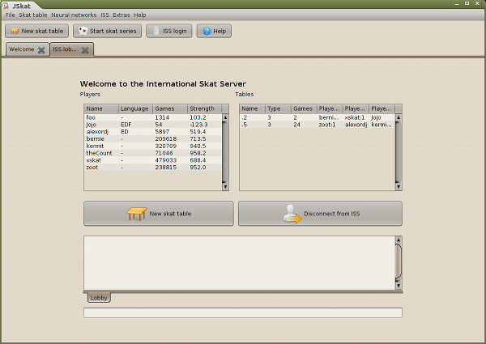Die Lobby des ISS. Sie haben eine Übersicht über alle angemeldeten Spieler und über alle Tische, an denen gerade gespielt wird.
Ältere Screenshots
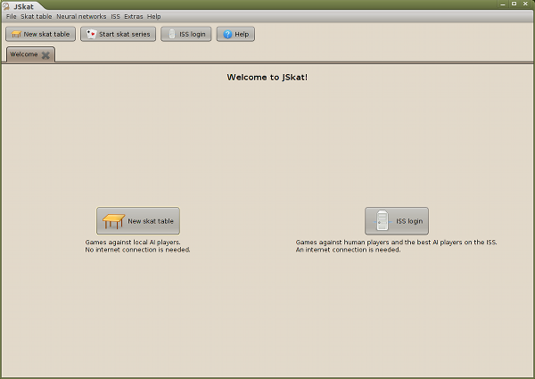Der Startbildschirm zeigt die zwei Spieloptionen für JSkat: Sie können offline gegen die mitgelieferten KI-Spieler oder online gegen Menschen oder die derzeit stärksten KI-Spieler auf dem Internationalen Skat-Server spielen.
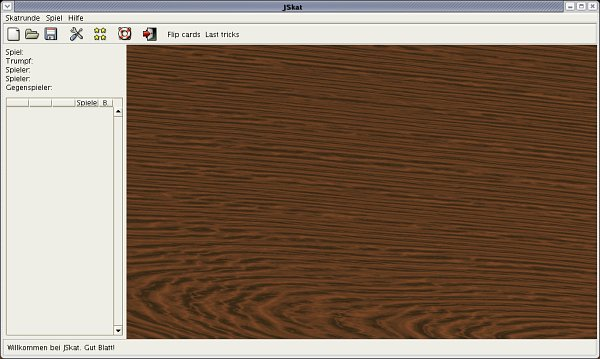Nach dem Start von JSkat werden Sie sich an einem hölzernen Tisch wiederfinden.
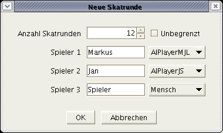Lassen Sie uns eine neue Skatserie starten. Sie haben die Auswahl zwischen verschiedenen KI-Spielern. Spieler 3 kann ebenfalls ein KI-Spieler sein.
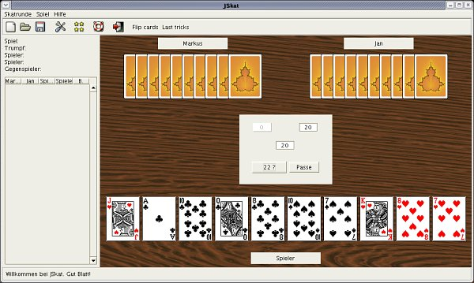Jetzt können Sie reizen.
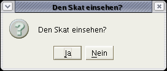Wenn Sie das höchste Reizgebot abgegeben haben, werden Sie gefragt, ob Sie in den Skat schauen wollen oder ein Handspiel spielen wollen.
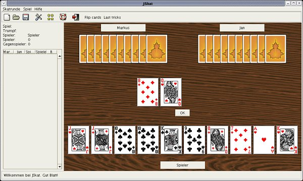Hier können Sie eine oder zwei Karten aus dem Skat in Ihre Hand aufnehmen.
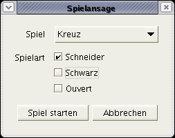Nach der Skateinsicht müssen Sie ein Spiel ansagen. Wenn Sie nicht in den Skat gesehen haben, können Sie zusätzlich Schneider, Schwarz oder Ouvert ansagen.
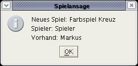Jetzt beginnt das Spiel.
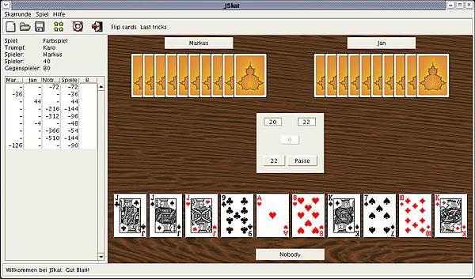Während des Spiels werden alle Ergebnisse für Sie zusammengerechnet und eine Skatliste mit allen Gewinnen und Verlusten für Sie geführt.
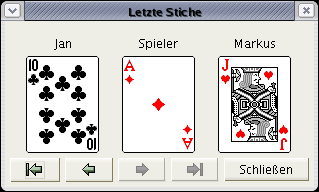Sie können die letzten Stiche mit diesem kleinen Dialog einsehen.
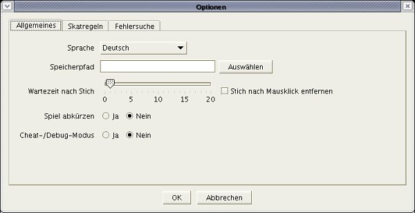Im Options-Dialog können Sie die Sprache, den Speicherpfad und andere Dinge einstellen, die das Verhalten von JSkat steuern.
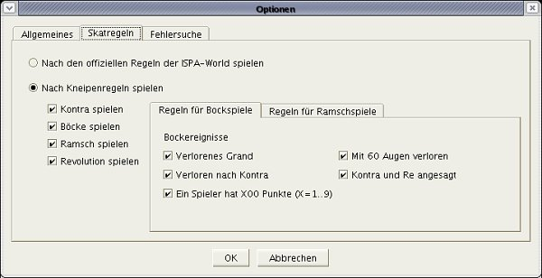JSkat erlaubt die Einstellung der Skatregeln bis ins kleinste Detail. Sie können entscheiden, ob Sie nur nach den offiziellen Regeln der ISPA-World oder ob Sie nach einigen Kneipenregeln wie Kontra, Bock und Ramsch spielen wollen.
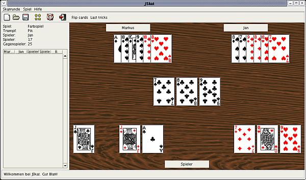Es gibt einen speziellen Debug-Modus, in dem Sie in die Karten der anderen Spieler schauen können.
 Deutsche Version
Deutsche Version English version
English version